Single-tasking Operating Systems
DOSDOS was one of the most popular single-tasking (single-user) operating systems. Some of its "features":Other notes:
Before process After process 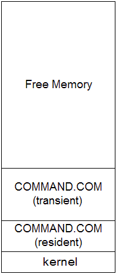 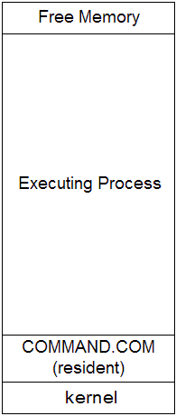
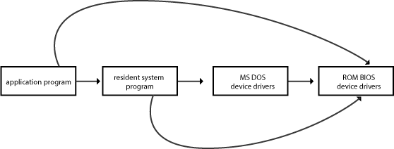
Multi-tasking Operating Systems
UNIXUNIX Example
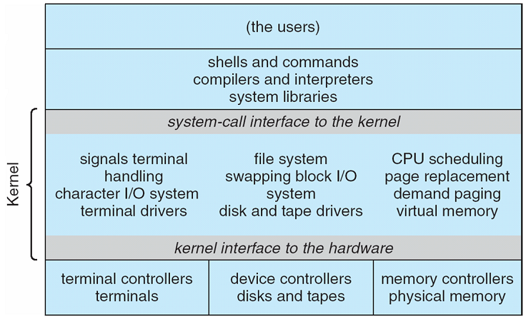 Operating System Concepts - 8th Edition Silberschatz, Galvin, Gagne ©2009
Details
MicrokernelsMicrokernels
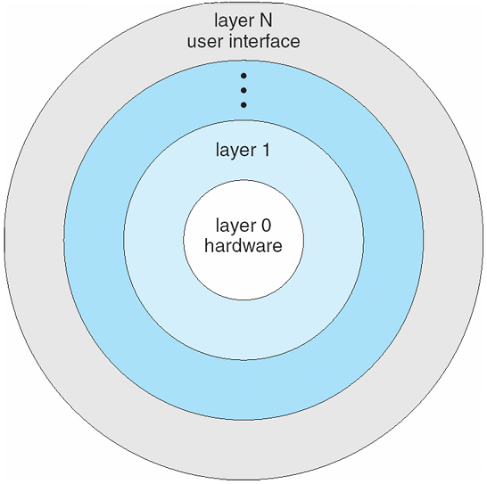 Operating System Concepts - 8th Edition Silberschatz, Galvin, Gagne ©2009
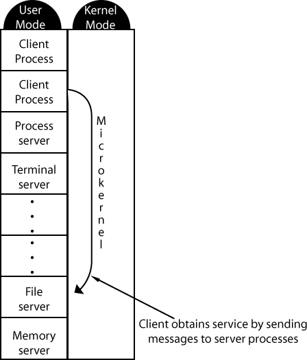
| 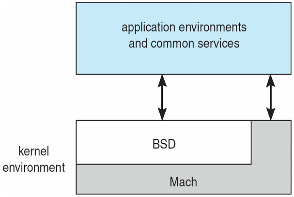 |
| Operating System Concepts - 8th Edition Silberschatz, Galvin, Gagne ©2009 |
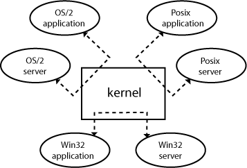
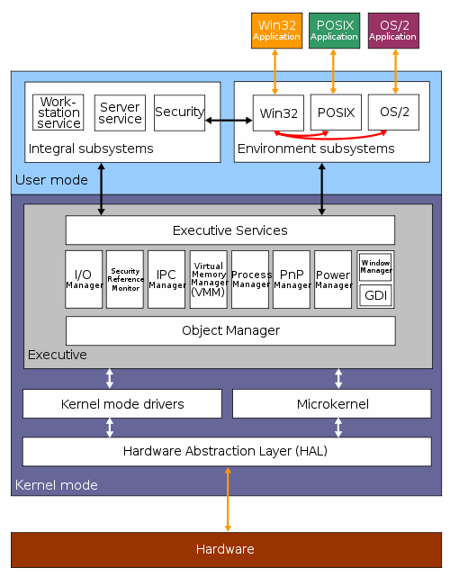
http://en.wikipedia.org/wiki/File:Windows_2000_architecture.svg
Marketing Name Internal Name Date Released Build No. Windows NT 3.1 NT 3.1 July 1993 528 Windows NT 3.5 NT 3.5 September 1994 807 Windows NT 3.51 NT 3.51 May 1995 1057 Windows NT 4 NT 4.0 July 1996 1381 Windows 2000 NT 5.0 December 1999 2195 Windows XP NT 5.1 August 2001 2600 Windows Server 2003 NT 5.2 March 2003 3790 Windows Vista NT 6.0 January 2007 6000 Windows Server 2008 NT 6.0 March 2008 6001 Windows 7 NT 6.1 October 2009 7600 Windows Server 2008 R2 NT 6.1 October 2009 7600 Windows 8 NT 6.2 October 2012 9200 Windows Server 2012 NT 6.2 September 2012 9200 Windows 8.1 NT 6.3 October 2013 9600 Windows Server 2012 R2 NT 6.3 October 2013 9600 Windows 10 NT 10.0 July 29, 2015 10240-
18985Windows Server 2016 NT 10.0 September 26, 2016 14393-
16299Windows Server 2019 NT 10.0 October 2, 2018 17763
Users, groups, and file privileges
drwxrwx--- 2 aaron users 4096 2011-01-14 21:57 mydir -rw-r----- 2 aaron users 844 2011-04-02 02:45 myfile -rwxr-x--- 2 aaron users 9198 2016-03-04 09:18 myprogram -rw-r--r-- 1 aaron aaron 684 2010-03-22 11:17 noshare1 -rw------- 1 aaron users 92 2011-01-30 07:36 noshare2 drwxr-xr-x 2 root users 4096 2016-10-04 20:30 share |
chmod [ugoa][+-=][rwx]
#include <stdio.h> /* printf */
#include <stdlib.h> /* rand, srand */
#include <time.h> /* time */
int main(void)
{
srand(time(0));
while (1)
{
int x = 0;
x = *(&x + rand()); /* line 11 */
printf("%i\n", x);
}
return 0;
}
$ gcc -ansi -pedantic -Wall -Wextra -g fault1.c $ ./a.out Segmentation fault
$ valgrind -q --tool=memcheck ./a.out ==27396== Invalid read of size 4 ==27396== at 0x4005FA: main (fault1.c:11) ==27396== Address 0x9fc5a981c is not stack'd, malloc'd or (recently) free'd ==27396== ==27396== ==27396== Process terminating with default action of signal 11 (SIGSEGV) ==27396== Access not within mapped region at address 0x9FC5A981C ==27396== at 0x4005FA: main (fault1.c:11) ==27396== If you believe this happened as a result of a stack ==27396== overflow in your program's main thread (unlikely but ==27396== possible), you can try to increase the size of the ==27396== main thread stack using the --main-stacksize= flag. ==27396== The main thread stack size used in this run was 8388608. Segmentation fault
#include <stdio.h> /* printf */
int main(void)
{
int count = 1;
while (1)
{
char x = 0;
x = *(&x + count);
printf("%i, %p\n", count, &x + count);
count++;
}
return 0;
}
$ gcc -ansi -pedantic -Wall -Wextra -g fault2.c $ ./a.out [ thousands of lines deleted ] 6250, 0x7fffea6a6ff9 6251, 0x7fffea6a6ffa 6252, 0x7fffea6a6ffb 6253, 0x7fffea6a6ffc 6254, 0x7fffea6a6ffd 6255, 0x7fffea6a6ffe 6256, 0x7fffea6a6fff Segmentation fault
0x7fffea6a7000and is on a 4K boundary (0x1000 is 4096 decimal), which is the typical size of memory pages. (More on memory pages later.)
| gcc on Windows | cl 64-bit | cl 32-bit |
|---|---|---|
[ lines deleted ] 16813, 0000000000233FF8 16814, 0000000000233FF9 16815, 0000000000233FFA 16816, 0000000000233FFB 16817, 0000000000233FFC 16818, 0000000000233FFD 16819, 0000000000233FFE 16820, 0000000000233FFF |
[ lines deleted ] 5384, 0000000000140FF8 5385, 0000000000140FF9 5386, 0000000000140FFA 5387, 0000000000140FFB 5388, 0000000000140FFC 5389, 0000000000140FFD 5390, 0000000000140FFE 5391, 0000000000140FFF |
[ lines deleted ] 1937, 003EFFF8 1938, 003EFFF9 1939, 003EFFFA 1940, 003EFFFB 1941, 003EFFFC 1942, 003EFFFD 1943, 003EFFFE 1944, 003EFFFF |
int main(void)
{
while (1)
;
return 0;
}
PROCESS STATE CODES
Here are the different values that the s, stat and state output specifiers (header "STAT" or "S") will
display to describe the state of a process.
D Uninterruptible sleep (usually IO)
R Running or runnable (on run queue)
S Interruptible sleep (waiting for an event to complete)
T Stopped, either by a job control signal or because it is being traced.
W paging (not valid since the 2.6.xx kernel)
X dead (should never be seen)
Z Defunct ("zombie") process, terminated but not reaped by its parent.
For BSD formats and when the stat keyword is used, additional characters may be displayed:
< high-priority (not nice to other users)
N low-priority (nice to other users)
L has pages locked into memory (for real-time and custom IO)
s is a session leader
l is multi-threaded (using CLONE_THREAD, like NPTL pthreads do)
+ is in the foreground process group
#include <stdio.h> /* printf */
int g_initialized1 = 10; /* DATA segment */
int g_initialized2 = 12; /* DATA segment */
int g_initialized3 = 14; /* DATA segment */
int g_uninitialized1; /* BSS segment */
int g_uninitialized2; /* BSS segment */
int g_uninitialized3; /* BSS segment */
int main(void) /* CODE segment */
{
int local_variable = 5; /* STACK segment */
static int local_uninit_static; /* BSS segment */
static int local_init_static = 10; /* DATA segment */
printf("Uninitialized1 global data is in the BSS segment = %p\n", &g_uninitialized1);
printf("Uninitialized2 global data is in the BSS segment = %p\n", &g_uninitialized2);
printf("Uninitialized3 global data is in the BSS segment = %p\n", &g_uninitialized3);
printf(" Initialized1 global data is in the DATA segment = %p\n", &g_initialized1);
printf(" Initialized2 global data is in the DATA segment = %p\n", &g_initialized2);
printf(" Initialized3 global data is in the DATA segment = %p\n", &g_initialized3);
printf(" Code for main is in the CODE segment = %p\n", &main);
printf(" Code for printf is in the CODE segment = %p\n", &printf);
printf(" Code for scanf is in the CODE segment = %p\n", &scanf);
printf(" Local non-static data is in the STACK segment = %p\n", &local_variable);
printf(" Local uninit static data is in the BSS segment = %p\n", &local_uninit_static);
printf(" Local init static data is in the DATA segment = %p\n", &local_init_static);
return 0;
}
Output:
gcc on Windows (32-bit)
Uninitialized1 global data is in the BSS segment = 0x404070 Uninitialized2 global data is in the BSS segment = 0x404050 Uninitialized3 global data is in the BSS segment = 0x404060 Initialized1 global data is in the DATA segment = 0x40200c Initialized2 global data is in the DATA segment = 0x402010 Initialized3 global data is in the DATA segment = 0x402014 Code for main is in the CODE segment = 0x401100 Code for printf is in the CODE segment = 0x40128c Code for scanf is in the CODE segment = 0x40129c Local non-static data is in the STACK segment = 0x22ccb0 Local uninit static data is in the BSS segment = 0x404030 Local init static data is in the DATA segment = 0x402018bcc32 (32-bit)
Uninitialized1 global data is in the BSS segment = 00412434 Uninitialized2 global data is in the BSS segment = 00412438 Uninitialized3 global data is in the BSS segment = 0041243C Initialized1 global data is in the DATA segment = 0040F0C8 Initialized2 global data is in the DATA segment = 0040F0CC Initialized3 global data is in the DATA segment = 0040F0D0 Code for main is in the CODE segment = 004011EC Code for printf is in the CODE segment = 0040508C Code for scanf is in the CODE segment = 004050B0 Local non-static data is in the STACK segment = 0012FF88 Local uninit static data is in the BSS segment = 00412430 Local init static data is in the DATA segment = 0040F0D4cl 9.0 (32-bit)
Uninitialized1 global data is in the BSS segment = 0040EDA0 Uninitialized2 global data is in the BSS segment = 0040ED9C Uninitialized3 global data is in the BSS segment = 0040ED98 Initialized1 global data is in the DATA segment = 0040D000 Initialized2 global data is in the DATA segment = 0040D004 Initialized3 global data is in the DATA segment = 0040D008 Code for main is in the CODE segment = 00401000 Code for printf is in the CODE segment = 00401187 Code for scanf is in the CODE segment = 0040116E Local non-static data is in the STACK segment = 0012FF6C Local uninit static data is in the BSS segment = 0040E320 Local init static data is in the DATA segment = 0040D00Ccl 10.0 (64-bit)
Uninitialized1 global data is in the BSS segment = 000000013F460698 Uninitialized2 global data is in the BSS segment = 000000013F460694 Uninitialized3 global data is in the BSS segment = 000000013F460690 Initialized1 global data is in the DATA segment = 000000013F45E000 Initialized2 global data is in the DATA segment = 000000013F45E004 Initialized3 global data is in the DATA segment = 000000013F45E008 Code for main is in the CODE segment = 000000013F451000 Code for printf is in the CODE segment = 000000013F4511BC Code for scanf is in the CODE segment = 000000013F451188 Local non-static data is in the STACK segment = 000000000016FCC0 Local static data is in the BSS segment = 000000013F45F660 Local static data is in the DATA segment = 000000013F45E00Cgcc on Linux 64-bit (4.4.3)
Uninitialized1 global data is in the BSS segment = 0x601050 Uninitialized2 global data is in the BSS segment = 0x60104c Uninitialized3 global data is in the BSS segment = 0x601054 Initialized1 global data is in the DATA segment = 0x601028 Initialized2 global data is in the DATA segment = 0x60102c Initialized3 global data is in the DATA segment = 0x601030 Code for main is in the CODE segment = 0x400594 Code for printf is in the CODE segment = 0x400480 Code for scanf is in the CODE segment = 0x4004a0 Local non-static data is in the STACK segment = 0x7fffe7c96b3c Local uninit static data is in the BSS segment = 0x601048 Local init static data is in the DATA segment = 0x601034gcc on Linux 32-bit (3.3)
Uninitialized1 global data is in the BSS segment = 0x8049920 Uninitialized2 global data is in the BSS segment = 0x804991c Uninitialized3 global data is in the BSS segment = 0x8049918 Initialized1 global data is in the DATA segment = 0x8049804 Initialized2 global data is in the DATA segment = 0x8049808 Initialized3 global data is in the DATA segment = 0x804980c Code for main is in the CODE segment = 0x8048380 Code for printf is in the CODE segment = 0x804829c Code for scanf is in the CODE segment = 0x804827c Local non-static data is in the STACK segment = 0xbffff1e4 Local uninit static data is in the BSS segment = 0x8049914 Local init static data is in the DATA segment = 0x8049810
Adding this to the top of the program:
and adding this print statement:int g_initialized0 = 0; /* ???? segment */
printf(" Initialized0 global data is in the ???? segment = %p\n", &g_initialized0);
cl 9.0 (32-bit)
Initialized0 global data is in the ???? segment = 0040F2E4 Uninitialized1 global data is in the BSS segment = 0040FD50 Uninitialized2 global data is in the BSS segment = 0040FD4C Uninitialized3 global data is in the BSS segment = 0040FD48 Initialized1 global data is in the DATA segment = 0040E000 Initialized2 global data is in the DATA segment = 0040E004 Initialized3 global data is in the DATA segment = 0040E008 Code for main is in the CODE segment = 00401000 Code for printf is in the CODE segment = 0040119D Code for scanf is in the CODE segment = 00401180 Local non-static data is in the STACK segment = 0012FF74 Local static data is in the BSS segment = 0040F2E0 Local static data is in the DATA segment = 0040E00C
gcc on Linux 64-bit (4.8.5)
Initialized0 global data is in the ???? segment = 0x60105c Uninitialized1 global data is in the BSS segment = 0x601068 Uninitialized2 global data is in the BSS segment = 0x60106c Uninitialized3 global data is in the BSS segment = 0x601064 Initialized1 global data is in the DATA segment = 0x601048 Initialized2 global data is in the DATA segment = 0x60104c Initialized3 global data is in the DATA segment = 0x601050 Code for main is in the CODE segment = 0x4005ad Code for printf is in the CODE segment = 0x400480 Code for scanf is in the CODE segment = 0x4004b0 Local non-static data is in the STACK segment = 0x7fffc550ea7c Local static data is in the BSS segment = 0x601060 Local static data is in the DATA segment = 0x601054
clang on Linux 64-bit (6.0.1)
Initialized0 global data is in the ???? segment = 0x600de4 Uninitialized1 global data is in the BSS segment = 0x600df0 Uninitialized2 global data is in the BSS segment = 0x600df4 Uninitialized3 global data is in the BSS segment = 0x600dec Initialized1 global data is in the DATA segment = 0x600dd0 Initialized2 global data is in the DATA segment = 0x600dd4 Initialized3 global data is in the DATA segment = 0x600dd8 Code for main is in the CODE segment = 0x400570 Code for printf is in the CODE segment = 0x400450 Code for scanf is in the CODE segment = 0x400480 Local non-static data is in the STACK segment = 0x7fff9a8fcdd8 Local static data is in the BSS segment = 0x600de8 Local static data is in the DATA segment = 0x600ddc
gcc on Windows 32-bit (4.5.3)
Initialized0 global data is in the DATA segment = 0x404018 Uninitialized1 global data is in the BSS segment = 0x404108 Uninitialized2 global data is in the BSS segment = 0x404100 Uninitialized3 global data is in the BSS segment = 0x404104 Initialized1 global data is in the DATA segment = 0x402000 Initialized2 global data is in the DATA segment = 0x402004 Initialized3 global data is in the DATA segment = 0x402008 Code for main is in the CODE segment = 0x401170 Code for printf is in the CODE segment = 0x401318 Code for scanf is in the CODE segment = 0x401320 Local non-static data is in the STACK segment = 0x22ac6c Local static data is in the BSS segment = 0x40401c Local static data is in the DATA segment = 0x40200c
Looking at the executable with the nm program we can tell for sure where it is. The executable is named segments:
Output:nm segments
0000000000600de0 B __bss_start
0000000000600de0 b completed.7578
0000000000600dc0 D __data_start
0000000000600dc0 W data_start
00000000004004c0 t deregister_tm_clones
0000000000400530 t __do_global_dtors_aux
0000000000600b98 t __do_global_dtors_aux_fini_array_entry
0000000000600dc8 D __dso_handle
0000000000600ba0 d _DYNAMIC
0000000000600de0 D _edata
0000000000600df8 B _end
0000000000400784 T _fini
0000000000400560 t frame_dummy
0000000000600b90 t __frame_dummy_init_array_entry
0000000000400b88 r __FRAME_END__
0000000000600de4 B g_initialized0
0000000000600dd0 D g_initialized1
0000000000600dd4 D g_initialized2
0000000000600dd8 D g_initialized3
0000000000600d88 d _GLOBAL_OFFSET_TABLE_
w __gmon_start__
0000000000600df0 B g_uninitialized1
0000000000600df4 B g_uninitialized2
0000000000600dec B g_uninitialized3
0000000000400418 T _init
0000000000600b98 t __init_array_end
0000000000600b90 t __init_array_start
0000000000400790 R _IO_stdin_used
U __isoc99_scanf@@GLIBC_2.7
w _ITM_deregisterTMCloneTable
w _ITM_registerTMCloneTable
0000000000400780 T __libc_csu_fini
0000000000400710 T __libc_csu_init
U __libc_start_main@@GLIBC_2.2.5
0000000000400570 T main
0000000000600ddc d main.local_init_static
0000000000600de8 b main.local_uninit_static
U printf@@GLIBC_2.2.5
00000000004004f0 t register_tm_clones
0000000000400490 T _start
0000000000600de0 D __TMC_END__
This BSS initialization was really apparent with the older (<= 2.2) LD (GNU linker) in Linux.B/b - BSS Segment D/d - Initialized Data Segment R/r - Read-only Data Segment T/t - Text (Code) Segment U - Undefined symbol
Interesting post on StackOverflow/* File: test.c */ const int size = 1000 * 1000 * 1000; #if 1 double data[size]; /* Takes 100s of times longer to link than one in main */ int main() { return 0; } #else int main() { double data[size]; return 0; } #endif Running the command: gcc test.c
Top Bottom
The CPU is spiked at 100% and the linker (version 2.22) also consumes 7.5 GB of RAM while doing the linking. The file on disk is not any bigger because of the .bss tag.
Operating System API
Overview
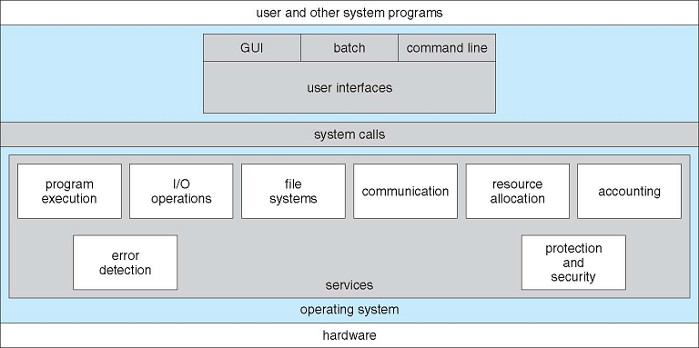 Operating System Concepts - 8th Edition Silberschatz, Galvin, Gagne ©2009
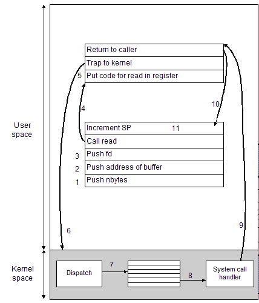
ssize_t read(int fd, void *buf, size_t nbytes); /* prototype */
read(fd, buffer, nbytes); /* call */
The number of the system call is written into a place where the operating system expects it, e.g. the eax register on the CPU. (step 5)
|
These articles show all of the gory details of exactly what happens when you make a system call. I don't expect you to follow all of the details, but you should at least be able to appreciate the significant overhead that is involved when you call into the kernel. It is certainly more work than calling an "ordinary" function.
Some Example System CallsProcess management:
File management:
Call Description pid = fork(); Create a child process. pid = waitpid(pid, &statloc, options); Wait for a child to terminate. s = execve(name, argv, environp); Replace a process with another process. s = kill(pid, signal); Send a signal to a process. exit(status); Terminate a process and return status.
Directory management:
Call Description fd = open(file, mode); Opens a file for reading/writing, etc. s = close(fd); Closes a file. n = read(fd, buffer, nbytes); Read bytes from a file into memory. n = write(fd, buffer, nbytes); Write bytes from memory to a file.
Miscellaneous:
Call Description s = mkdir(name, mode); Create a new directory. s = rmdir(name); Removes a directory. s = chdir(name); Change to another directory. s = unlink(name); Delete an existing file.
Comparing system calls using C code to assembly. You can really see the system calls when writing assembly code. These trivial programs simply read from standard in and write to standard out.
Call Description id = getuid(); Get the id of the current user.
C code: (rw.c)
#include <stdio.h> /* perror */
#include <unistd.h> /* read, write */
#define BUFSIZE 1
int main(void)
{
/* copy BUFSIZE bytes at a time from stdin to stdout */
while (1)
{
unsigned char bytes[BUFSIZE];
int count = read(0, bytes, BUFSIZE);
if (count > 0)
write(1, bytes, count);
else
{
if (count == -1)
perror("Read failed");
break;
}
}
return 0;
}
; readwrite < textfile
;
; Build using these commands:
; nasm -f elf64 -g -F dwarf readwrite.asm
; ld -o readwrite readwrite.o
;
SECTION .bss
BUFSIZE equ 64 ; how many bytes to read each time
Buffer: resb BUFSIZE ; buffer to read into
SECTION .data
SECTION .text
global _start
; Read from stdin
; eax - SYS_read (3)
; ebx - file descriptor (0 - stdin)
; ecx - buffer to write into
; edx - number of bytes to read
_start: mov eax,3 ; SYS_read
mov ebx,0 ; stdin is 0
mov ecx,Buffer ; address of Buffer
mov edx,BUFSIZE ; number of bytes to read
int 80h ; make system call (traps to kernel)
mov esi,eax ; eax contains actual number of bytes read (save for later)
cmp eax,0 ; if eax is 0 then the end of file was reached
je Exit ; and we will exit the program
; Write to stdout
; eax - SYS_write (4)
; ebx - file descriptor (1 - stdout)
; ecx - buffer to read from
; edx - number of bytes to write
mov eax,4 ; SYS_write
mov ebx,1 ; stdout is 1
mov ecx,Buffer ; address of Buffer
mov edx,esi ; how many bytes to write (how many were read)
int 80h ; make system call (traps to kernel)
jmp _start ; read more bytes
; Exit the program
Exit:
mov eax,1 ; SYS_exit
mov ebx,0 ; return value (to OS)
int 80H ; make system call
The system calls are defined in unistd.h and syscall.h#define __NR_exit 1 #define __NR_read 3 #define __NR_write 4 #define SYS_exit __NR_exit #define SYS_read __NR_read #define SYS_write __NR_write
The Win32 API
UNIX/POSIX Windows Description fork CreateProcess Creates a new process. waitpid WaitForSingleObject Waits for a process to exit. execve (none) CreateProcess = fork + execve exit ExitProcess Terminate execution. open CreateFile Create a new file or open an existing one. close CloseHandle Closes a file read ReadFile Read data from a file. write WriteFile Write data to a file. lseek SetFilePointer Moves the file pointer. stat GetFileAttributes Get attributes from a file. mkdir CreateDirectory Creates a new directory. rmdir RemoveDirectory Removes a directory. unlink DeleteFile Deletes an existing file. chdir SetCurrentDirectory Change the current working directory. time GetLocalTime Get the current system time.
The strace Program
It is possible to "spy" on programs and see exactly what kinds of system calls are being made. This is trivial to do under Unix-based systems, such as Linux or macOS. (If strace isn't available on macOS, try dtrace instead. There's probably a wrapper script called dtruss that will probably work better.)This program (ptime.c) simply retrieves the current system time, formats it appropriately, and then prints it out on the screen.
#include <stdio.h> /* printf */
#include <time.h> /* time, strftime, localtime, tm, time_t */
int main(void)
{
struct tm *pt;
char buf[256];
time_t now;
/* Get the current system time (number of seconds since January 1, 1970) */
now = time(NULL);
/* Format and print, Weekday, Month Day, Year HH:MM:SS AM/PM Timezone */
/* example: Tuesday, May 22, 2018 5:23:36 PM PST */
pt = localtime(&now);
strftime(buf, sizeof(buf), "%A, %B %d, %Y %I:%M:%S %p %Z", pt);
printf("%s\n", buf);
return 0;
}
GNU gcc:
Microsoft:Tuesday, May 22, 2018 06:01:15 PM PST
Borland:Tuesday, May 22, 2018 06:01:25 PM Pacific Standard Time
Let's spy on the program and see what's going on behind-the-scenes. Assuming that the name of the executable is ptime, we run strace on the program like this (under Linux):Tuesday, May 22, 2018 06:01:35 PM
or piping stderr through less:strace ./ptime > /dev/null
and this is the output we see (errno and values)strace ./ptime 2>&1 > /dev/null | less
Some other useful options:
See the man page for strace for all of the options and details.
Option Meaning -c Only display summary information. -i Displays instruction pointer with each call. -r Displays relative timestamp (microseconds). -t Show time of day of each call. -tt Show time of day with microseconds for each call. -v Verbose. Show all parameters to system calls. -x Show non-ASCII in hex. -y Include filename with file descriptor. -a column Align return values on a specific column. -e trace=set Only show calls in set (.e.g trace=open,close).
A glimpse at the relations ship between FILE * and file handles:
The FILE structure from GNU's compiler (version 4.4.3):
struct _IO_FILE {
int _flags; /* High-order word is _IO_MAGIC; rest is flags. */
/* The following pointers correspond to the C++ streambuf protocol. */
/* Note: Tk uses the _IO_read_ptr and _IO_read_end fields directly. */
char* _IO_read_ptr; /* Current read pointer */
char* _IO_read_end; /* End of get area. */
char* _IO_read_base; /* Start of putback+get area. */
char* _IO_write_base; /* Start of put area. */
char* _IO_write_ptr; /* Current put pointer. */
char* _IO_write_end; /* End of put area. */
char* _IO_buf_base; /* Start of reserve area. */
char* _IO_buf_end; /* End of reserve area. */
struct _IO_marker *_markers;
struct _IO_FILE *_chain;
int _fileno;
int _flags2;
/* other fields removed */
};
typedef struct _IO_FILE FILE;
struct _iobuf {
char *_ptr;
int _cnt;
char *_base;
int _flag;
int _file;
int _charbuf;
int _bufsiz;
char *_tmpfname;
};
typedef struct _iobuf FILE;
Incidentally, there is also a program called ltrace which traces library calls (user mode). Run it the same way:#define stdin (&__iob_func()[0]) #define stdout (&__iob_func()[1]) #define stderr (&__iob_func()[2])
and this is the output we see: (Use -n X to indent calls, where X is the column to align at. The -S option shows system calls as well.)ltrace -n 2 ./ptime > /dev/null
That's strange, where is the call to printf?
time(NULL) = 1338329347 localtime(0xbfd94314) = 0x006fc720 strftime("Tuesday, May 22, 2018 03:09:07 P"..., 256, "%A, %B %d, %Y %I:%M:%S %p %Z", 0x006fc720) = 37 puts("Tuesday, May 22, 2018 03:09:07 P"...) = 38 +++ exited (status 0) +++
This is a simple program (copy-read.c) that makes an exact copy of a file. It works like the copy command in Windows or the cp command in Linux. This program makes system calls to open, read, write, and close.
#include <stdio.h> /* printf, perror */
#include <fcntl.h> /* O_RDONLY, O_WRONLY, O_CREAT, O_TRUNC */
#include <unistd.h> /* open, close, read, write */
#define BUFSIZE 64
int main(int argc, char **argv)
{
if (argc < 3)
{
printf("usage: copy {source} {destination}\n");
return 1;
}
else
{
char *source = argv[1]; /* input file */
char *destination = argv[2]; /* output file */
int infile, outfile; /* file handles */
/* open source file for read-only */
infile = open(source, O_RDONLY);
if (infile == -1)
{
printf("Can't open %s for read\n", source);
return 2;
}
/* open destination file for write-only */
outfile = open(destination, O_WRONLY | O_CREAT | O_TRUNC);
if (outfile == -1)
{
printf("Can't open %s for write\n", destination);
perror(destination);
close(infile);
return 3;
}
/* copy BUFSIZE bytes from source to destination */
while (1)
{
unsigned char bytes[BUFSIZE];
int count = read(infile, bytes, BUFSIZE);
if (count > 0)
write(outfile, bytes, count);
else
{
/* error or EOF? */
if (count == -1)
perror(destination);
break;
}
}
/* clean up */
close(infile);
close(outfile);
return 0;
}
}
Here's the same program (copy-fread.c) using the C library functions fopen, fread, fwrite, and fclose. These library functions call the system functions.
1 2 4 8 16 32 64
128 256 512 1024 64K 1M
#include <stdio.h> /* printf, fopen, fread, fwrite, fclose */
#define BUFSIZE 1
int main(int argc, char **argv)
{
if (argc < 3)
{
printf("usage: copy {source} {destination}\n");
return 1;
}
else
{
char *source = argv[1]; /* input file */
char *destination = argv[2]; /* output file */
FILE *infile, *outfile; /* file handles */
/* open source file for read-only */
infile = fopen(source, "rb");
if (!infile)
{
printf("Can't open %s for read\n", source);
return 2;
}
/* open destination file for write-only */
outfile = fopen(destination, "wb");
if (!outfile)
{
printf("Can't open %s for write\n", destination);
fclose(infile);
return 3;
}
/* copy BUFSIZE bytes at a time from source to destination (no error checking) */
while (!feof(infile))
{
unsigned char bytes[BUFSIZE];
int count = fread(bytes, sizeof(unsigned char), BUFSIZE, infile);
if (count)
fwrite(bytes, sizeof(unsigned char), count, outfile);
else
break;
}
/* clean up */
fclose(infile);
fclose(outfile);
}
}
Library calls (fopen, fread, etc.)
System calls (open, read, etc.)
1 2 4 8 16 32 64 128 256 512 1024 512K
Other traces:
1 2 4 8 16 32 64 128 256 512 1024 64K 1M
Try it with other programs:
More information on these programs:strace ls strace ls -l strace cp
{kind=link}
{kind=link}